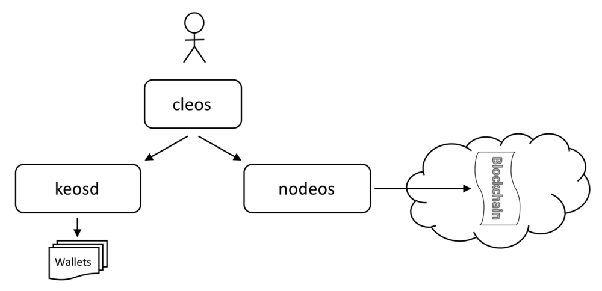
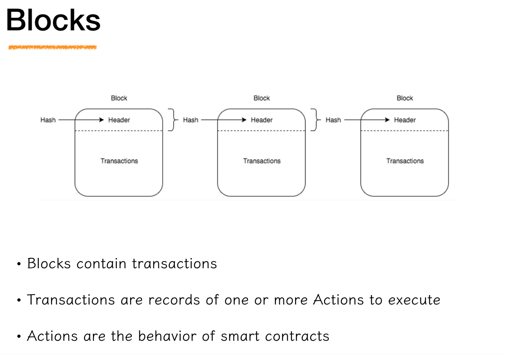
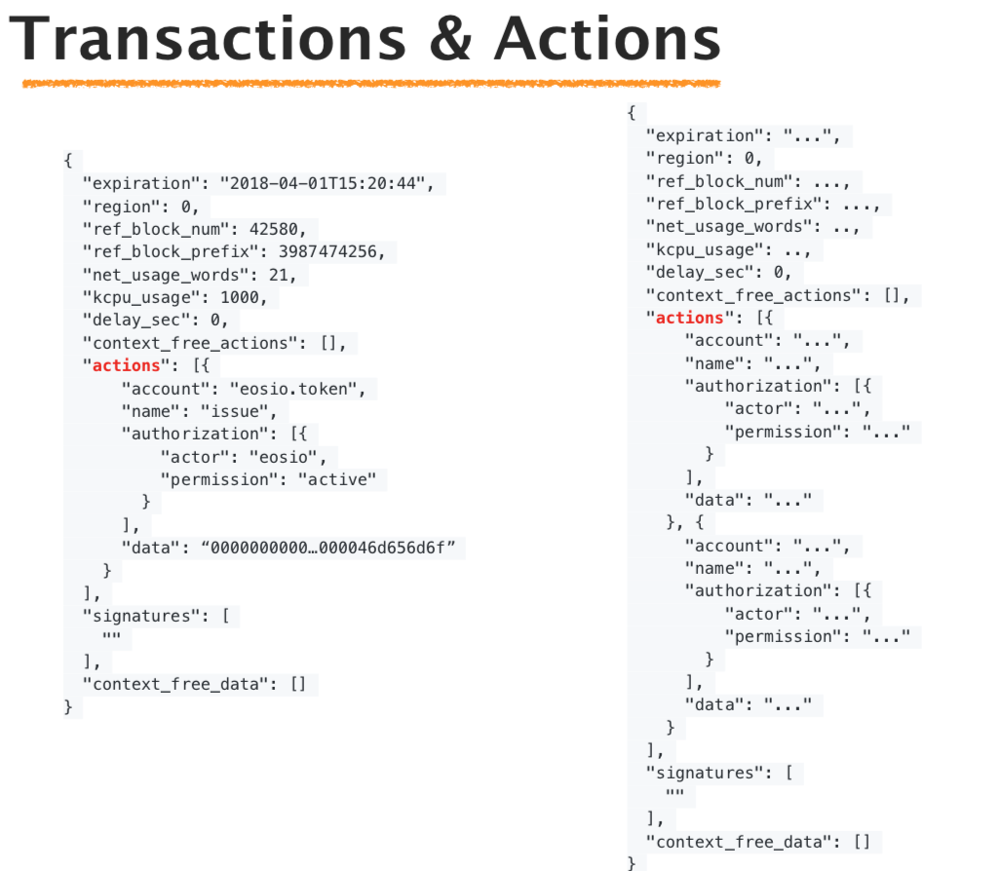
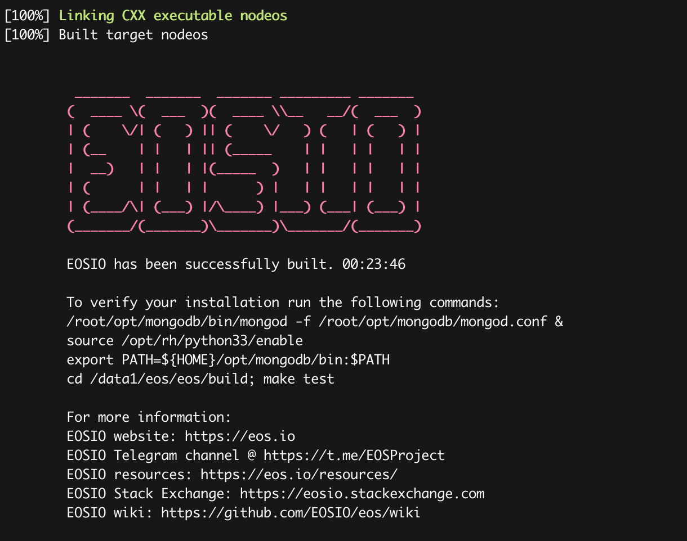
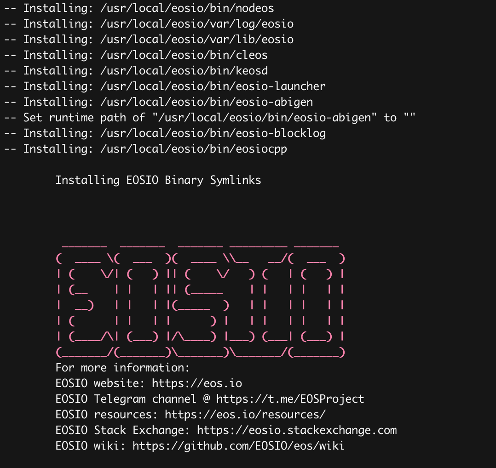

EOS (Enterprise Operation System)是由 Block.one公司主导开发的一种全新的基于区块链智能合约平台，由区块链奇才 BM （Daniel Larimer）领导开发。旨在为高性能分布式应用提供底层区块链平台服务。EOS 项目的目标是实现一个类似操作系统的支撑分布式应用程序的区块链架构。该架构可以提供账户，身份认证，数据库，异步通信以及可在数以万计的 CPU/GPU群集上进行程序调度和并行运算。EOS最终可以支持每秒执行数百万个交易，同时普通用户执行智能合约无需支付使用费用。
Block.one团队人才济济，包括Brendan Blummer（之前的公司交易MMORPG游戏货币）、首席科技官Daniel Larimer（区块链传奇人物之一，下面会介绍）和Brock Pierce（区块链基金会主席，Blockchain Capital联合创始人）等等。
2017年6月26日，Block.one开始销售EOS代币，计划355天共销售10亿EOS代币，EOS主网上线后会将这个以太坊基础版本的代币EOS转换为其主链上的代币。
2017年6月26-30日，销售20%也就是2亿代币，5天融资1.85亿美元，打破了当时ICO的世界纪录。70%接下来会以每小时23小时200万个发售。发售期间始于7月1号，剩下的持续350天。剩余的10%留属Block.one，不能交易和转让。每年新产生最多5%用于做DPoS的奖励。
EOS 项目刚刚发布的时候的共识机制是 DPoS(Deligated Proof of Stake，委托股权证明)，类似于 Bitshares 和 Steem，这种共识机制采用随机的见证人出块顺序，出块速度为 3 秒，交易不可逆需要45秒。
EOS 最新的白皮书中已经将共识机制从 DPoS 升级为了 BFT-DPoS（Byzantine Fault Tolerance – Deligated Proof of Stake，带有拜占庭容错的委托股权证明）。交易确认时间大大缩短，从 45 秒缩短至 3 秒左右（主要为等待生产区块的时间）。这种机制可以称为初级版的 BFT-DPoS 共识机制。Daniel Larimer 称 EOS 新的 BFT-DPoS 共识机制还在开发中，会在系统上线前完成开发。

EOS包括三个组件:
- nodeos: 管理区块链节点的组件
- keosd：管理钱包的组件
- cleos：控制区块链和钱包CLI工具

- block包含交易(transaction)
- 交易包含一组要执行的Action
- Action代表智能合约(smart contract)

下面我们介绍如何在MacOSX/Centos 7上编译、运行一个私有的EOS集群， 并进行相应的的测试。
编译
编译可以让你更好的了解和定制EOS, 当然你可以使用docker镜像运行这三个组件。Docker镜像的运行方法可以参考Docker Quickstart。
首先下载源代码
将代码clone到本地。
|
|
如果你不使用--recursive参数， 你需要在eos文件夹下运行git submodule update --init --recursive。
编译
EOS可以支持在以下操作系统进行编译：
- Amazon 2017.09 and higher.
- Centos 7.
- Fedora 25 and higher (Fedora 27 recommended).
- Mint 18.
- Ubuntu 16.04 (Ubuntu 16.10 recommended).
- MacOS Darwin 10.12 and higher (MacOS 10.13.x recommended).
进入eos文件夹并执行编译：
|
|
编译完之后进行安装
|
|
在编译的过程中，会检查相应的依赖库，你需要根据提示安装对应的版本。有些库比如boost、llvm，你可能需要使用brew卸载重新安装所需的版本。
在编译的过程中会有些问题，但是基本上对应的问题都可以在EOS的github issues找的到对应的issue和解决方案，你只需按照关键字在issue搜索就能找到答案，因为别人已经趟过对应的坑了。
编译完成后会显示下图：

测试
首先需要启动mongodb:
|
|
然后运行测试:
|
|
安装
执行下面的脚本进行安装
|
|

配置一个节点的私有testnet网络

编译完eos的代码， nodeos存在于build/programs/nodeos， 或者你执行安装后，nodeos应该存在于你的系统二进制文件夹中。
为了统一描述，我们假定相关的组件和工具都已经安装到系统文件夹中了，否则你需要到build/programs相应的文件夹下去找。
运行一个nodeos节点:
|
|
可以看到相关的输出:
|
|
上面的日志中我们可以看到配置文件和数据文件夹的位置，
|
|
MacOS和Linux的位置不一样：
- Mac OS: ~/Library/Application\ Support/eosio/nodeos/config
- Linux: ~/.local/share/eosio/nodeos/config
你可以在在启动时指定配置文件夹和数据文件，所有的其它配置都放在配置文件中:
|
|
这样就会在eos1/config创建一个配置文件config.ini, 你可以修改这个配置文件，比如下面的修改:
|
|
它默认使用producer为eosio, 公私钥为EOS6MRyAjQq8ud7hVNYcfnVPJqcVpscN5So8BhtHuGYqET5GDW5CV=KEY:5KQwrPbwdL6PhXujxW37FSSQZ1JiwsST4cqQzDeyXtP79zkvFD3的producer。
你可以使用创建一个不同的私钥：
|
|
这里我们配置的是producer节点，它可以产生block。 我们还可以创建非producer节点， 非producer节点就不需压迫配置producer-name和signature-provider,并且producer_plugin插件页不需要了。
启动keosd
为了使用钱包，你需要启动keosd, 这里我们指定配置文件的路径和数据路径， 如果配置文件不存在，会创建一个。
|
|
修改配置文件wallet/config/config.ini, 配置http监听地址，然后重启keosd:
|
|
创建钱包
nodeos和keosd既然已经启动，我们就可以创建我们自己的钱包了。
创建一个可管理的钱包
|
|
-n可以指定钱包的名称，不指定的话创建default钱包。
这个密码PW5JbeAsfCHJqNwv7fGhDVPb94L5cKtcrfPFXYxG7U9jiYG9pUNtn很重要,它用来解锁钱包，不要弄丢了。
使用下面的命令可以解锁这个钱包：
|
|
创建账号
1、 在创建账号之前，我们需要为账号创建密钥
|
|
2、 将这个私钥导入到钱包
|
|
3、创建账号
cleos create account用来创建boot的时候的账号， 比如
eosio.bpay
eosio.msig
eosio.names
eosio.ram
eosio.ramfee
eosio.saving
eosio.stake
eosio.token
eosio.vpay
cleos system newaccount用来创建普通账号,
本文下面演示使用cleos create account创建账号。
If the system contract isn't running, then accounts don't need to buy ram or stake resources. cleos create account works in this mode.If the system contract is running, then accounts need enough ram to hold the account information. They also need staked resources to cover any transactions they sign. cleos system newaccount takes care of these issues.
我们要创建一个新的账号，需要由某个账号签名，所以还需要将创建账号的私钥导入到钱包。我们刚才配置了一个producer为eosio的初始账号，
所以我们使用它来创建账号。(创建账号为eosio, 待创建账号为admin1)
导入eosio的私钥，你可以查看eos1/config/config.ini中的配置：
|
|
这样我们就可以使用eosio创建其他的账号了，比如下面我们创建一个admin1的账号:
|
|
因为我们需要将交易发送到我们的测试网络上，所以这里需要指定nodeos节点的http地址http://127.0.0.1:48888。
4、下面再创建另外一个账号admin2
这次使用admin1创建：
首先生成一个私钥：
|
|
提交创建账号的交易:
|
|
如果想用本地的钱包管理这个账号， 那么我们可以导入这个私钥：
|
|
现在已经创建了两个账号admin1和admin2,并且都导入了本地钱包:
|
|
参考文档
- https://eos.io
- https://developers.eos.io/eosio-nodeos/docs/overview-1
- https://developers.eos.io/eosio-nodeos/docs/local-single-node-testnet
- https://developers.eos.io/eosio-nodeos/docs/local-multi-node-testnet
- https://developers.eos.io/eosio-nodeos/docs/bios-boot-sequence
- https://medium.com/coinmonks/building-dapps-with-eos-io-uw-workshop-29ec6fcbd505
- https://en.wikipedia.org/wiki/EOS.IO
- https://www.damenginfo.com/982.html
- https://www.jianshu.com/p/0b2f855b23bc
- https://mp.weixin.qq.com/s?__biz=MzU5MzMxNTk2Nw==&mid=2247483899&idx=1&sn=5ddaead86b2c1950305b4a6a2be91295&chksm=fe1310ebc96499fd
- https://blog.csdn.net/bedrock_stable/article/details/80318178
- https://eoswiki.readthedocs.io/zh_CN/latest/智能合约入门/
- http://www.hestart.com/2018/08/30/eos-quick-start/
- https://github.com/EOSIO/eos/issues/5453